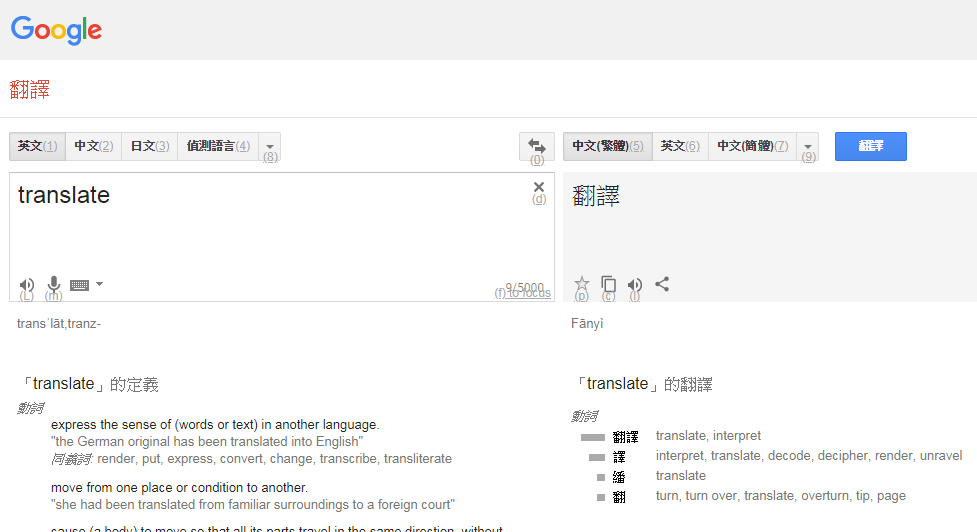

時常使用 Google 翻譯，都得在滑鼠鍵盤間不斷切換非常的麻煩。
在 Chrome 上安裝這個擴充功能讓翻譯省時又省力!
將擴充功能加入 Chrome
網址 :
https://chrome.google.com/webstore/detail/keyboard-shortcuts-for-go/akjhnbnjanndggbcegmdggfjjclohjpo?hl=en
Google 翻譯畫面
加入後，可以看見 Google 翻譯下面的按鈕會有些英文字，那些是快捷鍵需要按的按鍵。

使用快捷鍵
翻譯左邊發聲 : Ctrl + Alt + Shift + L翻譯右邊發聲 : Ctrl + Alt + L